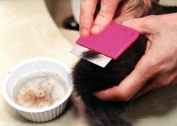
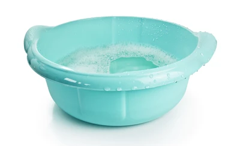
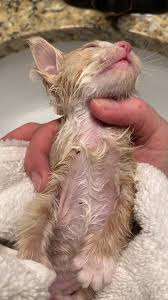
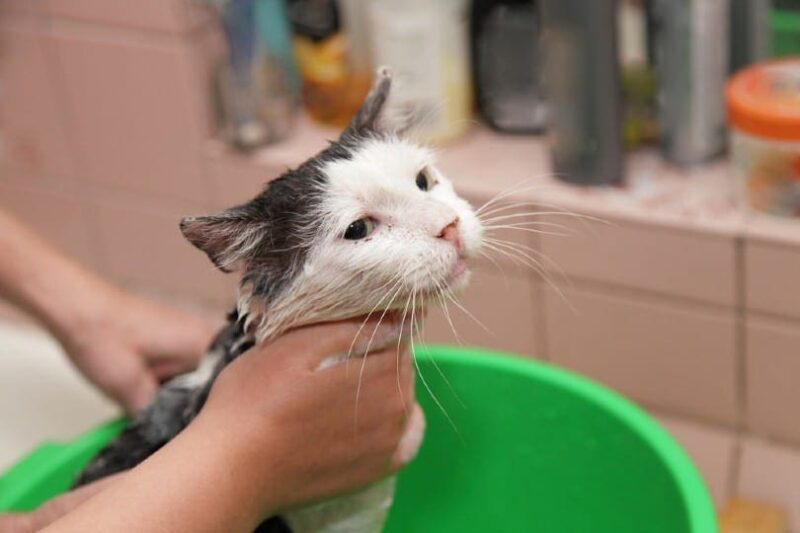
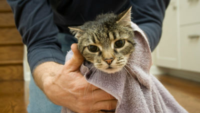

If the kitten is under 8 weeks old or has only a few fleas, comb its fur daily with a fine comb, dipping the comb in soapy water to trap fleas.

For kittens over 8 weeks old, fill a plastic basin with warm water and a small amount of dish soap to bathe them.

Wearing gloves, apply a little dish soap around their neck to prevent fleas from crawling to the head, eyes, and ears.

Bathe the cat in the soapy water, gently rubbing the fur. You may notice some blood spots from fleas — keep water away from the ears.
